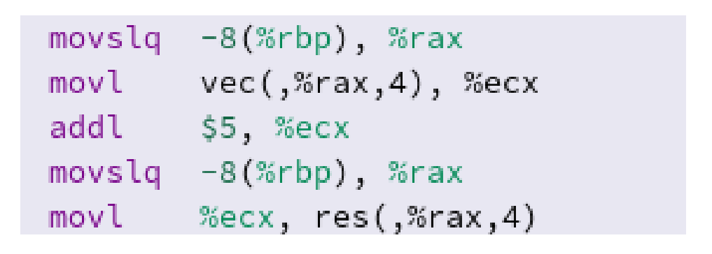
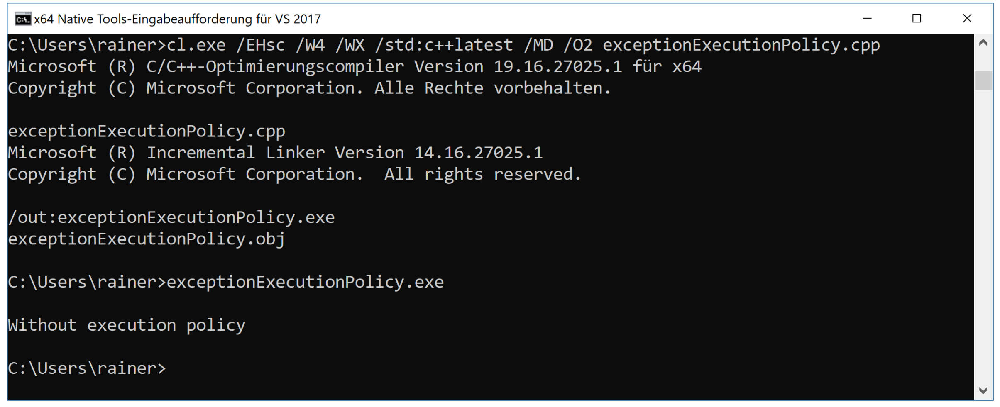

执行策略
C++17标准中定义了三种执行策略:
std::execution::sequenced_policystd::execution::parallel_policystd::execution::parallel_unsequenced_policy
(译者注：C++20中添加了unsequenced_policy策略)
相应的策略标定了程序应该串行、并行，还是与向量化并行。
std::execution::seq: 串行执行std::execution::par: 多线程并行执行std::execution::par_unseq: 多个线程上并行，可以循环交叉，也能使用SIMD(单指令多数据)
std::execution::par或std::execution::par_unseq允许算法并行或向量化并行。
下面的代码片段展示了所有执行策略的使用方式。
#include <execution>
#include <vector>
#include <algorithm>
int main() {
std::vector<int> v = { 1, 2, 3, 4, 5, 6, 7, 8, 9 };
// standard sequential sort
std::sort(v.begin(), v.end());
// sequential execution
std::sort(std::execution::seq, v.begin(), v.end());
// permitting parallel execution
std::sort(std::execution::par, v.begin(), v.end());
//permitting parallel and vectorized execution
std::sort(std::execution::par_unseq, v.begin(), v.end());
}
示例中，可以使用经典的std::sort(第11行)。C++17中，可以明确指定使用方式：串行(第14行)、并行(第17行)，还是向量化并行(第20行)。
std::is_execution_policy可以检查模板参数T是标准数据类型，还是执行策略类型：std::is_execution_policy<T>::value。如果T是std::execution::sequenced_policy, std::execution::parallel_policy, std::execution::parallel_unsequenced_policy，或已定义的执行策略类型，则表达式结果为true；否则，为false。
并行和向量化执行
算法是否以并行和向量化的方式运行，取决于许多因素。例如：CPU和编译器是否支持SIMD指令，还取决于编译器实现和代码的优化级别。
下面的示例使用循环填充数组。
#include <iostream>
const int SIZE = 8;
int vec[] = { 1, 2, 3, 4, 5, 6, 7, 8 };
int res[] = { 0, 0, 0, 0, 0, 0, 0, 0 };
int main() {
for (int i = 0; i < SIZE; ++i) {
res[i] = vec[i] + 5;
}
for (int i = 0; i < SIZE; ++i) {
std::cout << res[i] << " ";
}
std::cout << std::endl;
}
第12行是这个示例中的关键。我们可以在compiler explorer看一下clang 3.6生成的相应汇编指令。
无优化
汇编指令中，每个加法都是串行进行的。

使用最高优化级别
通过使用最高的优化级别-O3，寄存器(如：xmm0)可以容纳128位，或者说是4个整型数字。这样，加法就可以同时在四个元素进行了。

无执行策略算法的重载，与具有串行执行策略std::execution::seq算法的重载在异常处理方面有所不同。
##异常
如果执行策略的算法发生异常，将调用std::terminate。std::terminate调用std::terminate_handler，之后使用std::abort，让异常程序终止。执行策略的算法与调用std::execution::seq执行策略的算法之间没有区别。无执行策略的算法会传播异常，因此可以对异常进行处理。exceptionExecutionPolicy.cpp可以佐证我的观点。
// exceptionExecutionPolicy.cpp
#include <algorithm>
#include <execution>
#include <iostream>
#include <stdexcept>
#include <string>
#include <vector>
int main() {
std::cout << std::endl;
std::vector<int> myVec{ 1,2,3,4,5 };
try {
std::for_each(myVec.begin(), myVec.end(),
[](int) {throw std::runtime_error("Without execution policy"); }
);
}
catch (const std::runtime_error & e) {
std::cout << e.what() << std::endl;
}
try {
std::for_each(std::execution::seq, myVec.begin(), myVec.end(),
[](int) {throw std::runtime_error("With execution policy"); }
);
}
catch (const std::runtime_error & e) {
std::cout << e.what() << std::endl;
}
catch (...) {
std::cout << "Catch-all exceptions" << std::endl;
}
}
第21行可以捕获异常std::runtime_error，但不能捕获第30行中的异常，甚至在第33行中的捕获全部异常也无法捕获相应的异常。
使用新的MSVC编译器，并开启std:c++latest选项，程序会给出期望的输出。

只有第一个异常顺利捕获。
##数据竞争和死锁的风险
并行算法无法避免数据竞争和死锁。
下面的并行代码中，就存在数据竞争。
#include <execution>
#include <vector>
int main() {
std::vector<int> v = { 1, 2, 3 };
int sum = 0;
std::for_each(std::execution::par, v.begin(), v.end(), [&sum](int i) {
sum += i + i;
});
}
代码段中，sum有数据竞争。sum上累加了i + i的和，并且是并发修改的，所以必须保护sum。
#include <execution>
#include <vector>
#include <mutex>
std::mutex m;
int main() {
std::vector<int> v = { 1, 2, 3 };
int sum = 0;
std::for_each(std::execution::par, v.begin(), v.end(), [&sum](int i) {
std::lock_guard<std::mutex> lock(m);
sum += i + i;
});
}
将执行策略更改为std::execution::par_unseq时，会出现条件竞争，并导致死锁。
#include <execution>
#include <vector>
#include <mutex>
std::mutex m;
int main() {
std::vector<int> v = { 1, 2, 3 };
int sum = 0;
std::for_each(std::execution::par_unseq, v.begin(), v.end(), [&sum](int i) {
std::lock_guard<std::mutex> lock(m);
sum += i + i;
});
}
同一个线程上，Lambda函数可能连续两次调用m.lock，这会产生未定义行为，大多数情况下会导致死锁。这里，可以使用原子来避免死锁。
#include <execution>
#include <vector>
#include <mutex>
#include <atomic>
std::mutex m;
int main() {
std::vector<int> v = { 1, 2, 3 };
std::atomic<int> sum = 0;
std::for_each(std::execution::par_unseq, v.begin(), v.end(), [&sum](int i) {
std::lock_guard<std::mutex> lock(m);
sum += i + i;
});
}
因为sum是一个原子计数器，所以将语义放宽也没关系：sum.fetch_add(i * i, std::memory_order_relaxed) .
执行策略可以作为参数传入69个STL重载算法中，以及C++17添加的8个新算法中。